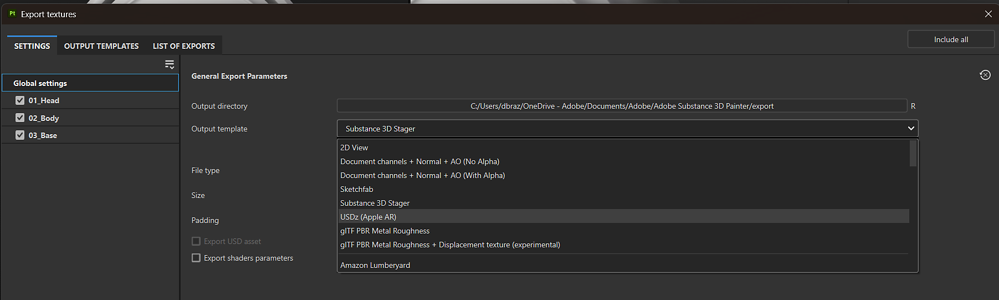
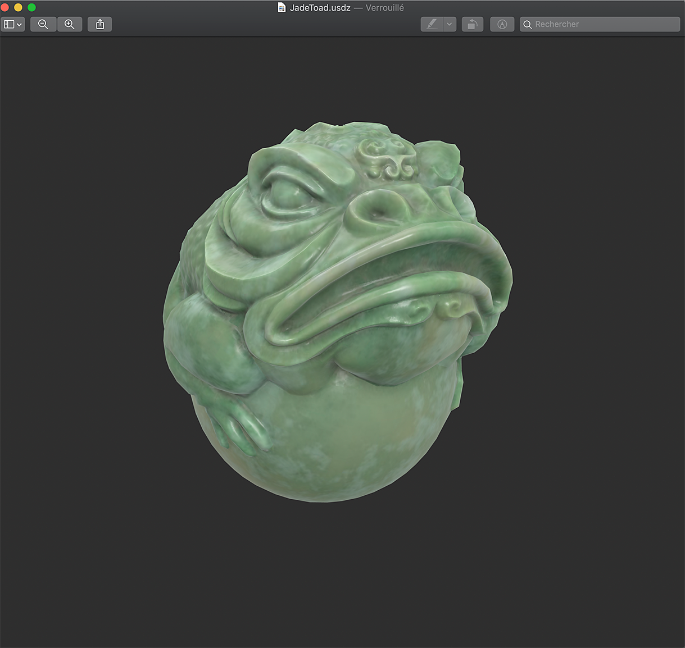
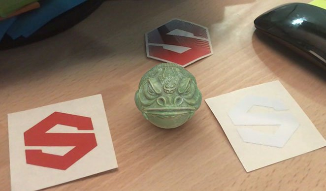

To export to USD with a custom Output template, do not use the USDz (Apple AR) template. Instead use your chosen Output template, and enable Export USD asset at the bottom of the Settings tab.
The USDz (Apple AR) predefined output template exports your asset configured for use with Apple AR applications.
To use the USDz (Apple AR) template:

Five texture files are created and saved (base color, metallic, normal, occlusion and roughness). All files are saved as JPGs except the normal map which is saved as a PNG to avoid artefacts due to lossy compression.
In addition, two other files are created with the extension usdc and usdz:
Here's an example of the JadeToad opened directly in MacOS from Finder:

Here's an example of the USDZ file sent to an iPhone, using the AR mode to place the JadeToad model into a real environment:
